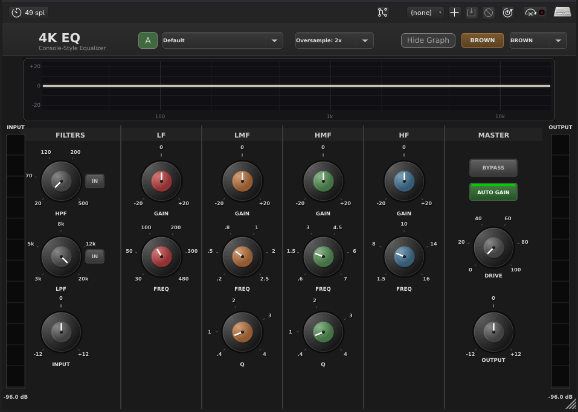
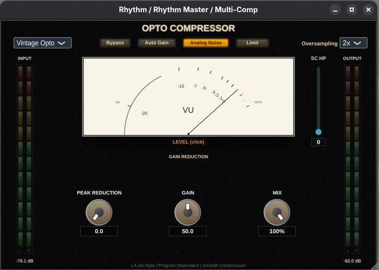
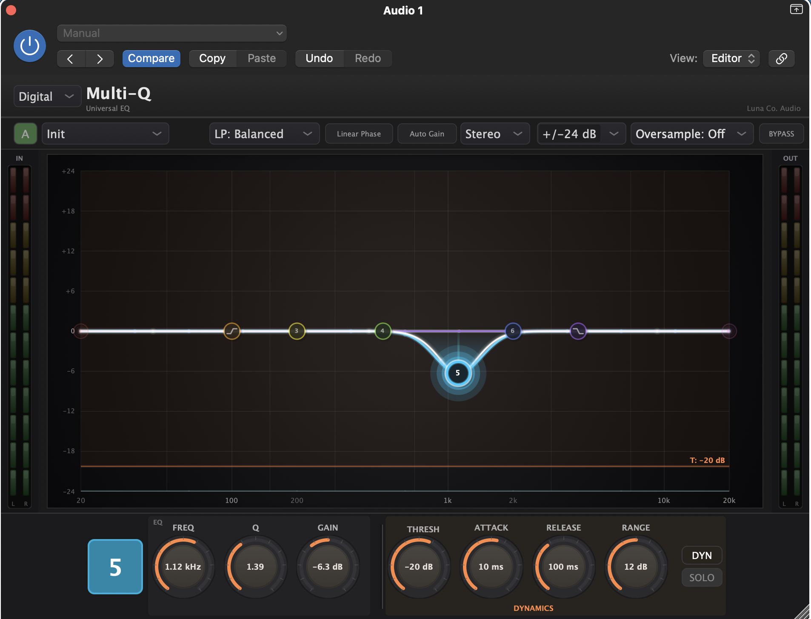
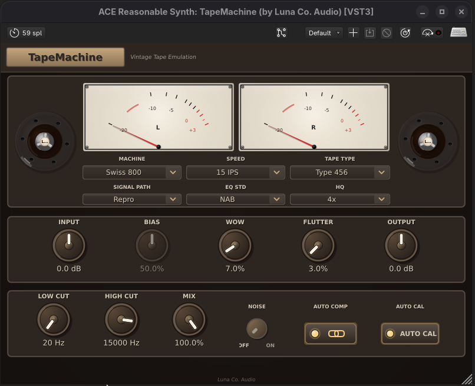
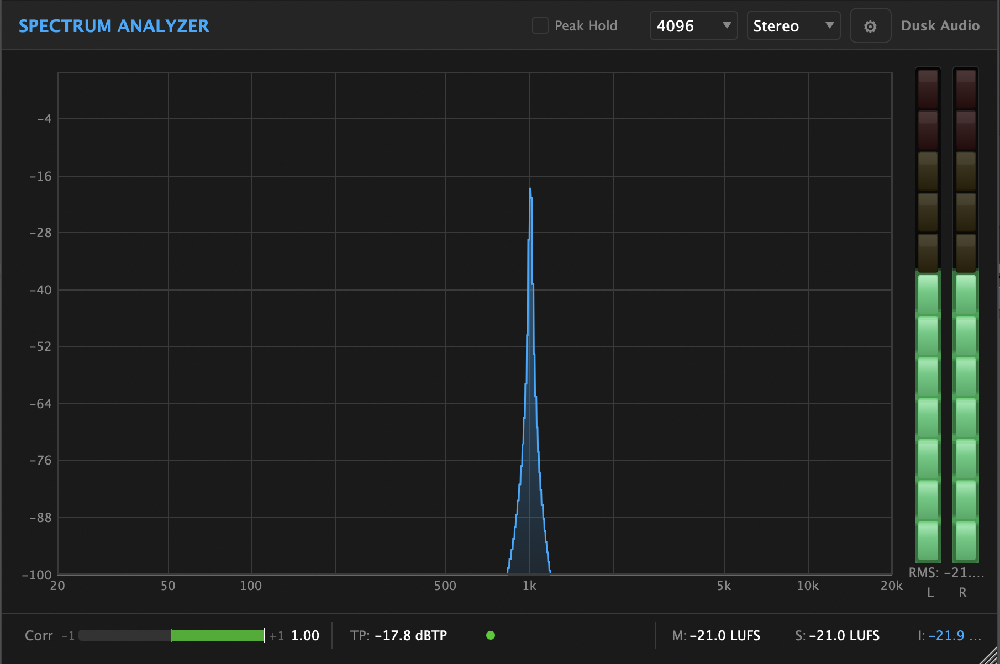
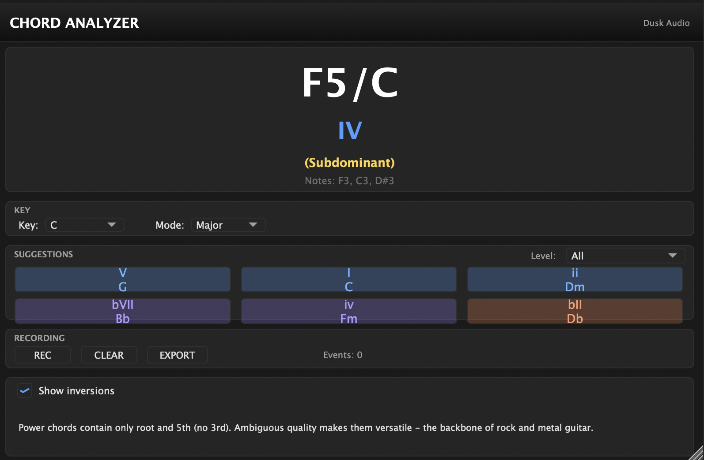
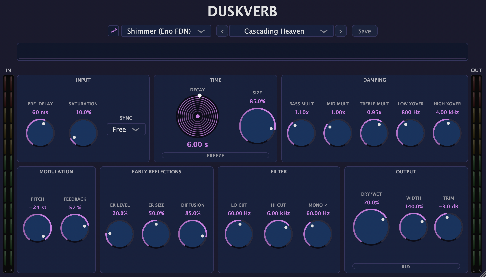

24-channel mixer
Three banks of eight to match any standard control surface. All visible on one screen.

Dusk Studio is a deliberately constrained, portastudio-style DAW. 24 channels, fixed signal chain, every control on screen — so you can record, mix, and master without leaving the application or losing the thread of the song.
Three banks of eight to match any standard control surface. All visible on one screen.

HPF → 4-band EQ → FET/Opto/VCA comp → sends → pan → bus → fader. No reordering. No surprises.

5-band Pultec EQ + multiband comp + brick-wall limiter + BS.1770 metering. No exporting to a second app.

The DSP that powers Dusk Studio is shared with our standalone plugin suite — open source, GPL-3.0, free forever. Use them in any DAW that supports VST3 / LV2.

British-console 4-band parametric with HPF / LPF + console saturation.
Download →
FET, Opto, VCA, and Bus compressors in one plugin. Three classic detectors, modern UX.
Download →
Pultec-style passive EQ with three tone-shaping bands + tube drive.
Download →
Multi-format tape saturation: VU meters, wow + flutter, head bump.
Download →
Real-time FFT + waterfall display.
Download →
Live chord detection from MIDI input.
Download →
Algorithmic reverb (plate / hall / room).
Download →
Impulse-response convolution with low-latency partition.
Download →
Wow-and-flutter analog delay with feedback saturation.
Download →
Step sequencer / drum pattern editor.
Download →
Polyphonic subtractive synth.
Download →
Guitar amp + cabinet IR loader.
Download →Record, mix, master, browse and download thousands of free soundfonts from inside the app. No time limit. No watermark. Export is the only thing locked, and unlocks with any paid tier.
Download links arrive by email within 60 seconds. One launch email when 1.0 ships. Unsubscribe in one click. We never share addresses.
Free
From $3 / month
Most popular
$27
Buys you the current major version (1.x). All 1.x minor + patch updates included.
Limited · 200 slots
$149 $79
After Aug 31, 2026 (or 200 buyers, whichever first) → permanent price $149.
— / 200 founders claimed
Claim a founders slot — $79Founders Edition is a one-time cohort. Once filled, the next tier above the $27 one-time licence is the standard upgrade path ($15 per major). We won't reopen Founders Edition or run launch discounts after the cohort closes — the price you pay today is the price.
Try Dusk Studio for 30 days. Use the template, drop in a chord progression, record, mix, master, export. If you don't finish a track, we refund every cent. No forms. No "are you sure?" emails.
Email support@duskaudio.com. Full refund within 24 hours. The only thing we ask is one sentence on what didn't work, so we can fix it for the next person.
The demo build and the Soundfont Downloader are free regardless of whether you refund. Yours forever — keep using them, keep your soundfonts, no claw-back.
Founders Edition buyers also get a 15-minute "Zero-to-Export" onboarding call (or a weekly live group session). If you can't get a track exported, we'll sit on a call until you can.
Dusk Studio's installers are unsigned — Apple Developer ($99/yr) and Windows code signing ($120–400/yr) cost more than this product is currently making. Ardour ships unsigned for the same reason. On first launch, macOS asks you to right-click → Open; Windows asks you to click "More info" → "Run anyway." 30 seconds. Walkthrough below.